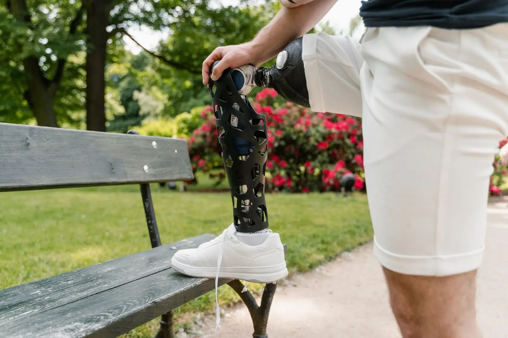

What to Expect at Your First Prosthetic Leg Fitting
A simple, step-by-step look at what happens from your first assessment to the day you walk out on your new leg.

It’s one of the first questions people ask us: “Is it going to hurt?”
The honest answer is that a well-fitting prosthetic leg shouldn’t be painful. But in the first weeks, some soreness is common. Your skin and muscles are doing a job they’ve never done before. They need time to adjust.
The trick is knowing what’s normal and what’s a sign that something needs to change.
When you start wearing a new leg, you might notice:
These usually get better week by week as you build up your wearing time.
Please take your leg off and contact your prosthetist if you notice:
These signs usually mean the socket is pressing too hard somewhere, or the fit has changed. It can often be fixed with a small adjustment. Don’t wait and “push through” it, as skin problems can stop you wearing your leg for weeks.
This is the most common reason. Your residual limb often shrinks in the first months after amputation. It can also change if you gain or lose weight. When the limb gets smaller, it sinks deeper into the socket and rubs.
Even a good socket may need small changes once you start walking more. We expect this, which is why follow-up visits matter.
If the foot or knee isn’t lined up quite right, you may lean, limp or feel pressure in odd places. Your other leg or your back can start to ache too.
A worn-out liner, the wrong sock thickness or a crease in your sock can all cause rubbing.
If you’re ever unsure, call us. We’d much rather check a small issue early than deal with a sore that’s had time to get worse.
You can learn more about how we fit legs on our lower limb prosthetics page, or read what to expect at your first prosthetic leg fitting.
This article is general information, not medical advice. Please speak to your doctor or our team about your own situation.
Your limb often shrinks a little during the day as fluid moves out of it. The socket then feels looser and rubs more. Adding a thin sock part way through the day often helps. If it doesn't, ask us to check the fit.
No. Phantom pain is pain felt in the part of the limb that's no longer there. It comes from the nerves, not the prosthesis. Talk to your doctor about it, as there are treatments that can help.

A simple, step-by-step look at what happens from your first assessment to the day you walk out on your new leg.

The letters look confusing, but they just tell you which joints the brace covers. Here's how the three main leg braces compare.

Why children wear braces, what the fitting is like and practical tips to help your child get used to their new AFO.
Our team is happy to help. Call us or book an assessment in Rawalpindi.